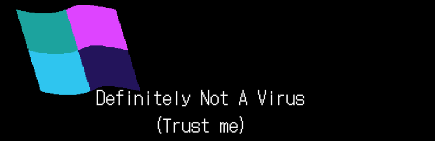
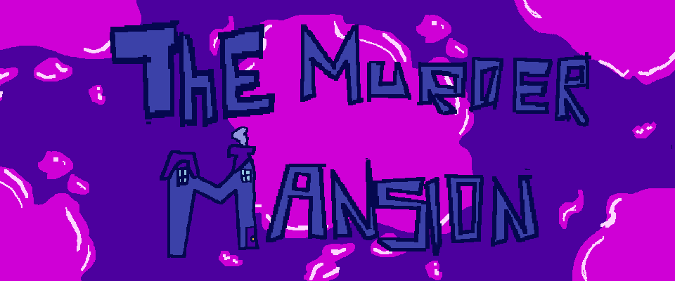

Amwichy
GameDeveloper y Músico
Acerca de mi
¡Hola!, soy amaury, tengo 20 años y tengo conocimientos en el área de programación, desarrollo de videojuegos y en música, actualmente me encunetro estudiando la carrera Software interactivo y videojuegos, he participado en diferentes proyectos desarrollando el papel de diseñador de juegos, programador y músico, aparte, he participado en 3 GameJams hasta la actualidad
Be the one!

Juega a ser vaqueros del viejo oeste que estan a un duelo a muerte, se más rapido que tu rival y dispara antes de que tu contrincante te gane
Este juego es perfecto para jugar con amigos en esos momentos para matar tiempo, solo para teléfono
Definitely Not A Virus(trust me)
Este es un juego creado para una GameJam, es un juego de terror psicologico donde tomes el lugar de una chica que ha conocido a alguien por internet, pero jamas imagino las consecuencias que esto le traería
un divertido juego que puede llegar a perturbar, solo para computadora
The murder Mansion
Este juego fue creado para una GameJam, es un juego que revive la esencia del misterio que nos trajo el juego clásico de mesa CLuedo, pero ahora en primera persona, interactua y descubre el misterio del asesinato
un juego bastante divertido y complejo al mismo tiempo, solo para computadora
TennisCat!
Un juego creado para entender la funcionalidad de unity, donde el reto fue probar una forma de ver de otra manera el pong, de los primeros juegos creados
¡Juega Ahora!